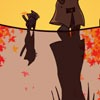

|

|
『いつもと変わらない散歩道。ふと、横を見ると隣を歩くキミ。小さな幸せを感じた、そんな秋の小径(こみち)。』
散歩中にちょこちょこついてくる子猫に会いましたって話です。
テーマ『暖』ということで、夕刻、赤に染まった世界を描いてみました。
とにかく夕焼け。夕焼けラブ。夕焼け、きれい？（ﾏﾃ
最近、いい夕焼けに出会いましたか〜？
普段、背景をあまり描いてないので苦戦。後から見ると反省点ありまくり。
いくら突発焦り気味企画とはいえ、資料は準備するべきですね（汗
あと時間、体力、精神力（苦笑）
次回作品を作るときにはもっと余裕を持ちたいです。
さて、あなたは繰り返される日々の中に小さな幸せ見つけていますか？
|
|